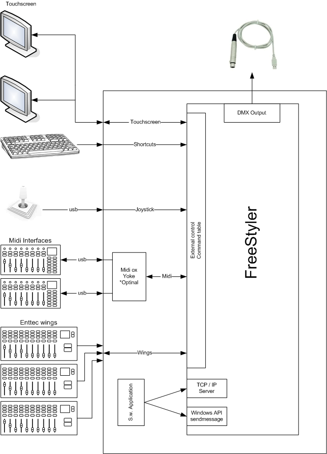
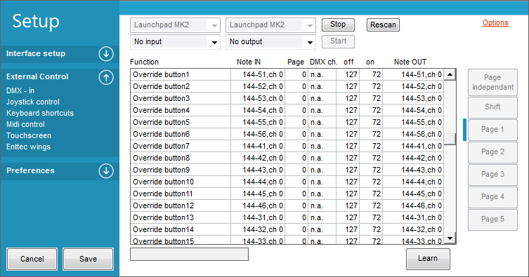

External control - Overview
Everything you want to do with FreeStyler can be done with a keyboard and mouse in the software itself, but for many people, having tactile controls like buttons, faders and knobs is more intuitive and more like what some people are used to with traditional lighting desks. FreeStyler allows you to hook up a number of different external controls including touchscreens, MIDI controllers and mind-controlled devices (provided they send standard MIDI signals).

External Commands
External commands are actions that FreeStyler can perform based on a command it receives, from an external controller (any of the methods listed here).
Here you can find a list with all the external commands:
External Commands
The screenshot below shows the settings window with External Controls opened on the left and the MIDI options on the right. This shows the list of external commands that can be configured (in this case via MIDI signals).

{kind=link}
Touchscreen
FreeStyler supports one touchscreen to be controlled with the Touchscreen Interface 1 or 2.
And of course you can connect more touchscreens to a PC (for standard PC control).
Using Touch Screen Interface1
Using Touch Screen Interface2
Keyboard Shotcuts
You can use the keyboard to make shortcut keys for triggering actions in FreeStyler.
Keyboard shortcuts
Joystick
The joystick control is enabled by checking the checkbox “on”.
When this is enabled all buttons on the joystick are active.
To control movement, the external “Toggle pan/tilt” can be used.
This makes it possible to switch the movement control between normal fader control and joystick control.
See Joystick control
MIDI Interface
One MIDI interface is available via a USB port.
If more MIDI interfaces are to be used then a patch program like MIDI-OX and MIDI Yoke can be used.
MIDI-OX combines MIDI signal from more devices into one.
You can do a lot more with MIDI-OX, and MIDI Yoke is a Virtual MIDI cable, so you can connect the MIDI controller to MIDI-OX and from MIDI ox with a virtual MIDI cable (MIDI Yoke) to FreeStyler.
Midi examples
Enttec Wings
Up to 3 Enttec wings can be added
TCP/IP Control
FreeStyler supports external control using a simple TCP/IP connection. Developers can communicate with FreeStyler using either a simple byte[] or ASCII protocol.
Example commands for ASCII FSOC002255
The command above is broken down into:
- FSOC : FreeStyler Command
- 002 : Command Code from reference document (in this instance 002 is blackout)
- 255 command parameter (255 is button down, 0 is button up. For sliders e.g intensity or speed value between 0-255)
Request button captions and other data Byte Protocol: 9 bytes
- bytes 0 to 3 FSBC Freestyler recieve command
- bytes 4 to 6 request code (see table)
- bytes 7 to 9 are reserved for future use.
- byte 0: “F”
- byte 1: “S”
- byte 2: “B”
- byte 3: “C”
- byte 4,5 and 6 : Code
- byte 7,8 and 9 : 0
Remote control via wifi.
Freestyler can be remotely controlled via smart phone or tablet, allowing the user to move around and still keep in control of Freestyler or adjust their lighting.
It may also serve as a secondary touch screen to compliment alongside the main display.
See Remote control via wifi